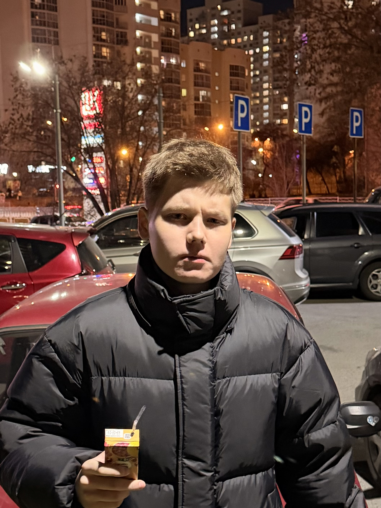

Студент 1 курса ИВТ · Machine Learning · NLP 1st-year Computer Science student · Machine Learning · NLP
Уверенно работаю с классическими ML-моделями на Python, сейчас осваиваю глубокое обучение и NLP на PyTorch. Интересуюсь прикладными задачами на стыке машинного обучения, анализа данных и экономики. Ищу стажировку или позицию Junior ML Engineer / Data Scientist.
I am confident working with classical machine learning models in Python and am currently learning deep learning and NLP with PyTorch. I am interested in applied problems at the intersection of machine learning, data analysis, and economics. I am seeking an internship or a Junior ML Engineer / Data Scientist position.
ИРИТ-РтФ · бакалавриат, 09.03.01 «Информатика и вычислительная техника», 1 курс
Institute of Radio Electronics and IT (IRIT-RtF) · Bachelor's, 09.03.01 Informatics and Computer Engineering, year 1